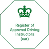

|  | ||
| Pass Plus consists of six modules about driving in different conditions: in town, in all weathers, on rural roads, at night, on dual carriageways, on motorways. |
Pass Plus is an established training course aimed at new drivers. It was designed by the Driving and Vehicle Standards Agency (DVSA) with the help of insurers and the driving instruction industry. Statistics show that new drivers are more likely to have an accident in the first two years after passing their test, due to lack of driving experience. |
Pass Plus builds on your skills and knowledge. It will teach you how to anticipate, plan for and deal with all kinds of hazards to help you become a more confident driver. Please contact us for prices and details of the Pass Plus course. |
| We are registered with the DVSA as a Pass Plus instructor, and we have our ADI 'green badge'. When you are deciding on a suitable ADI, first check whether your local authority supports Pass Plus. | If it does support Pass Plus, it will usually help you with course costs if you choose a Pass Plus ADI from your local authority's list. | If it doesn't support Pass Plus, then you need to choose a Pass Plus instructor by asking the ADI who taught you to drive. You could also ask a local driving school, or by checking local commercial publications, local newspaper adverts and websites. The DVSA does not provide lists of instructors. |